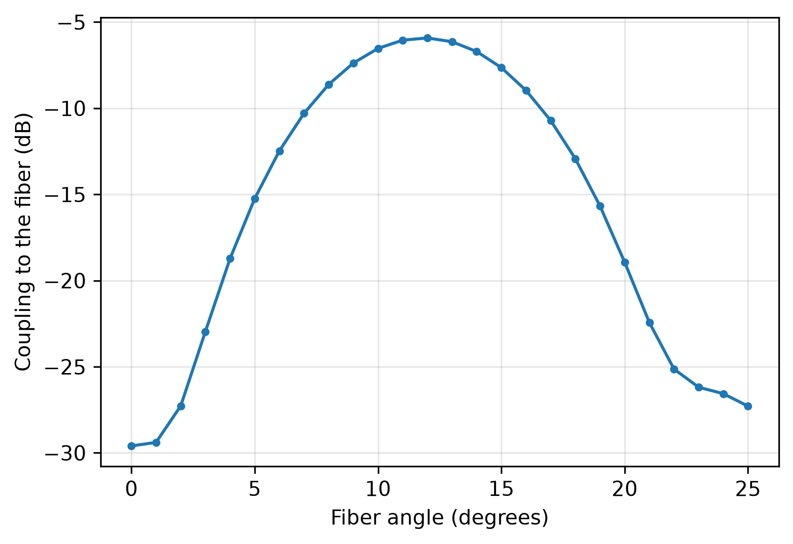
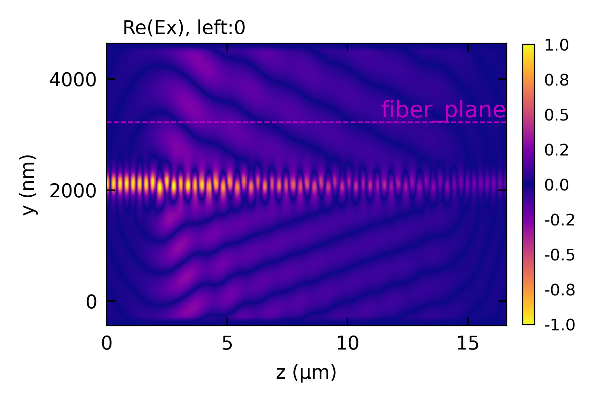

EME: Grating Coupler
A shallow-etch silicon grating coupler: how much of the guided light it sends up toward a fiber, how much is lost to the substrate, and the fiber angle that couples best.
The grating is uniform across its width, so it is solved as a slab, with a window two cells wide and periodic in x. A PML above and below absorbs the light the grating radiates once it has left the window. That light is carried by the lossy modes of each cross-section, so the basis needs many of them (100 here). The junctions between the etched and unetched cross-sections conserve power at any number of modes, so what is transmitted, reflected and radiated adds up to the power launched.
A monitor, a plane inside the circuit, samples the field 1 um above the silicon.
monitor_coupling() gives its overlap with a tilted Gaussian beam (a 10.4 um fiber mode here),
and a sweep() over the beam’s angle reuses the solved field, so it costs no further solve. By
reciprocity the same number is the coupling from the fiber into the waveguide.
This code example is licensed under the BSD 3-Clause License.
import sys
import numpy as np
import emodeconnection as emc
from matplotlib import pyplot as plt
## Set simulation parameters
wavelength = 1550 # [nm] wavelength
dx, dy = 20, 20 # [nm] resolution
h_core = 220 # [nm] silicon thickness
etch = 70 # [nm] grating etch depth
period = 630 # [nm] grating period
fill = 0.5 # [-] unetched fraction of each period
num_periods = 20 # [-]
h_box = 2000 # [nm] buried oxide
h_air = 2000 # [nm] air above the silicon
lead = 2000 # [nm] unetched waveguide before and after the grating
mfd = 10.4e3 # [nm] fiber mode field diameter
num_modes = 100 # [-] enough for the radiated light, see below
## The grating is uniform along x, so it is solved as a slab: a window two
## cells wide and periodic in x. A PML above and below absorbs the light the
## grating radiates once it has left the window, so the lossy modes in the
## basis carry the radiation.
em = emc.EMode(emode_cmd=sys.argv[1:], simulation_name='grating_coupler')
em.settings(
wavelength=wavelength, x_resolution=dx, y_resolution=dy,
window_width=2 * dx, window_height=h_box + h_core + h_air,
num_modes=num_modes, boundary_condition='0P',
pml_NSEW_bool=[1, 1, 0, 0], num_pml_layers=10,
background_material='Air')
em.shape(name='BOX', material='SiO2', height=h_box)
em.shape(name='core', material='Si', height=h_core)
em.label_profile(name='unetched')
em.shape(name='core', material='Si', height=h_core - etch)
em.label_profile(name='etched')
## Draw EME sections: a lead, the periods, and a lead out
em.straight_section(name='lead_in', profile='unetched', length=lead)
em.straight_section(name='gap', profile='etched', length=period * (1 - fill))
em.straight_section(name='tooth', profile='unetched', length=period * fill)
for _ in range(num_periods - 1):
em.copy_section(section_name='gap')
em.copy_section(section_name='tooth')
em.straight_section(name='lead_out', profile='unetched', length=lead)
em.EME()
## A monitor 1 um above the silicon, centered on the grating
z_center = lead + num_periods * period / 2
em.monitor(name='fiber_plane', w=z_center, y=h_box + h_core + 1000)
## Where the power goes, for 1 W in the fundamental mode
S = em.get('S_matrix')
T = np.abs(S.transmission(0, 1)[0, 0]) ** 2
R = np.abs(S.reflection(0)[0, 0]) ** 2
up = em.monitor_field('fiber_plane').power_through_plane
print(f'transmitted: {T * 100:.1f} %')
print(f'reflected: {R * 100:.1f} %')
print(f'radiated up through the monitor: {up * 100:.1f} %')
print(f'the rest, mostly into the substrate: {(1 - T - R - up) * 100:.1f} %')
## Coupling to a fiber at each tilt: the solved field is reused, only the
## overlap with the tilted Gaussian is evaluated again
angles = np.arange(0, 25.1, 1) # [deg]
data = em.sweep(key='angle', values=angles, result='monitor_coupling',
monitor='fiber_plane', beam=dict(mode_field_diameter=mfd))
coupling = np.asarray(data['monitor_coupling'])
best = angles[np.argmax(coupling)]
print(f'best fiber angle: {best:.0f} deg, coupling {10 * np.log10(coupling.max()):.2f} dB')
plt.figure(figsize=(6, 4))
plt.plot(angles, 10 * np.log10(coupling), marker='o', ms=3)
plt.xlabel('Fiber angle (degrees)')
plt.ylabel('Coupling to the fiber (dB)')
plt.grid(True, alpha=0.3)
plt.savefig('grating_coupling_vs_angle.png', dpi=300, bbox_inches='tight')
## The field along the grating: the guided mode decays as it radiates, up
## toward the fiber and down into the substrate, at the grating's angle
em.plot(component='Ex', plane='z-y', plot_function='real')
em.close()
Console output:
EMode3D 1.0.6 - email
Solving S-matrices...
Solving section: lead_in... completed in 0.0 sec
Solving section: gap... completed in 0.0 sec
Solving section: tooth... completed in 0.0 sec
Solving section: 4... completed in 0.0 sec
Solving section: 5... completed in 0.0 sec
Solving section: 6... completed in 0.0 sec
Solving section: 7... completed in 0.0 sec
Solving section: 8... completed in 0.0 sec
Solving section: 9... completed in 0.0 sec
Solving section: 10... completed in 0.0 sec
Solving section: 11... completed in 0.0 sec
Solving section: 12... completed in 0.0 sec
Solving section: 13... completed in 0.0 sec
Solving section: 14... completed in 0.0 sec
Solving section: 15... completed in 0.0 sec
Solving section: 16... completed in 0.0 sec
Solving section: 17... completed in 0.0 sec
Solving section: 18... completed in 0.0 sec
Solving section: 19... completed in 0.0 sec
Solving section: 20... completed in 0.0 sec
Solving section: 21... completed in 0.0 sec
Solving section: 22... completed in 0.0 sec
Solving section: 23... completed in 0.0 sec
Solving section: 24... completed in 0.0 sec
Solving section: 25... completed in 0.0 sec
Solving section: 26... completed in 0.0 sec
Solving section: 27... completed in 0.0 sec
Solving section: 28... completed in 0.0 sec
Solving section: 29... completed in 0.0 sec
Solving section: 30... completed in 0.0 sec
Solving section: 31... completed in 0.0 sec
Solving section: 32... completed in 0.0 sec
Solving section: 33... completed in 0.0 sec
Solving section: 34... completed in 0.0 sec
Solving section: 35... completed in 0.0 sec
Solving section: 36... completed in 0.0 sec
Solving section: 37... completed in 0.0 sec
Solving section: 38... completed in 0.0 sec
Solving section: 39... completed in 0.0 sec
Solving section: 40... completed in 0.0 sec
Solving section: 41... completed in 0.0 sec
Solving section: lead_out... completed in 0.0 sec
completed in 0.0 sec
Sweeping the beam's angle on monitor 'fiber_plane'... completed in 44.2 sec
Exited EMode
transmitted: 5.4 %
reflected: 0.4 %
radiated up through the monitor: 36.1 %
the rest, mostly into the substrate: 58.1 %
best fiber angle: 12 deg, coupling -5.92 dB
Figures:

